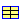

Modelica_Magnetic.Material.SoftMagnetic.PureIron.RFe80
Modelica_Magnetic.Material.SoftMagnetic.PureIron.RFe80
| Name | Description |
|---|---|
|  RFe80 | Hyperm 0 (RFe80) |
| VacoferS2 | VACOFER S2 (99.95% Fe) |
Modelica_Magnetic.Material.SoftMagnetic.PureIron.RFe80
Please refer to the description of the enclosing package SoftMagnetic for a description of all soft magnetic material characteristics of this package.
Source of B(H) characteristics: Product catalogue Magnequench, 2000
| Type | Name | Default | Description |
|---|---|---|---|
| RelativePermeability | my_i | 123 | Initial relative permeability at B=0 [1] |
| MagneticFluxDensity | B_myMax | 1.27 | Flux density at maximum relative permeability [T] |
| Real | c_a | 44410 | Coefficient of approximation function |
| Real | c_b | 6.4 | Coefficient of approximation function |
| Real | n | 10 | Exponent of approximation function |
record RFe80 =
Modelica_Magnetic.Material.SoftMagnetic.ApproximationData (
my_i=123,
B_myMax=1.27,
c_a=44410,
c_b=6.4,
n=10) "Hyperm 0 (RFe80)";
Modelica_Magnetic.Material.SoftMagnetic.PureIron.VacoferS2
Please refer to the description of the enclosing package SoftMagnetic for a description of all soft magnetic material characteristics of this package.
Source of B(H) characteristics:
Boll, R.: Weichmagnetische Werkstoffe: Einführung in den Magnetismus, VAC-Werkstoffe und ihre Anwendungen. 4th ed. Berlin, München: Siemens Aktiengesellschaft 1990
| Type | Name | Default | Description |
|---|---|---|---|
| RelativePermeability | my_i | 2666 | Initial relative permeability at B=0 [1] |
| MagneticFluxDensity | B_myMax | 1.15 | Flux density at maximum relative permeability [T] |
| Real | c_a | 187000 | Coefficient of approximation function |
| Real | c_b | 4.24 | Coefficient of approximation function |
| Real | n | 19 | Exponent of approximation function |
record VacoferS2 =
Modelica_Magnetic.Material.SoftMagnetic.ApproximationData (
my_i=2666,
B_myMax=1.15,
c_a=187000,
c_b=4.24,
n=19) "VACOFER S2 (99.95% Fe)";